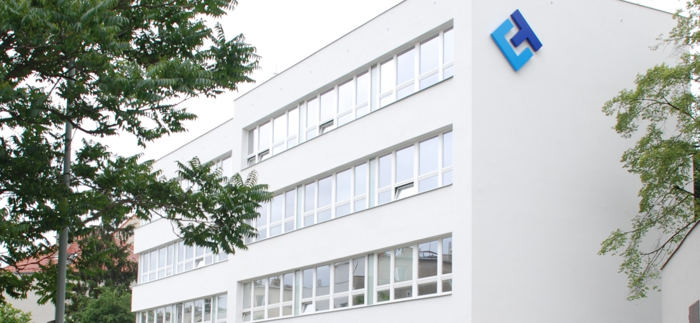

TC Business Innovation Hub starts its activities
TC Business Innovation Hub starts its activities as a specialised team within Technology Centre Prague. It brings together support for research commercialisation, technology businesses and the preparation of innovation projects.
Find out more
TC Business Innovation Hub (INNOHUB) builds on the experience and partnerships of TC Prague’s Business Development Department. Under a shared brand, it connects expertise and programmes that help turn research results and technology ideas into practical applications.
Researchers, start-ups, spin-offs and established companies can receive support from assessing technology and market potential through finding partners and funding to preparing pilot validation and a business model. Each collaboration responds to a specific need and an agreed outcome.
INNOHUB connects the work of TC Runway, ESA Technology Broker, ELIgnite, Cybersecurity Innovation Hub, ILO and Commercialization Reactor. Clients can draw on complementary support across sectors and stages of innovation.
Discuss your idea